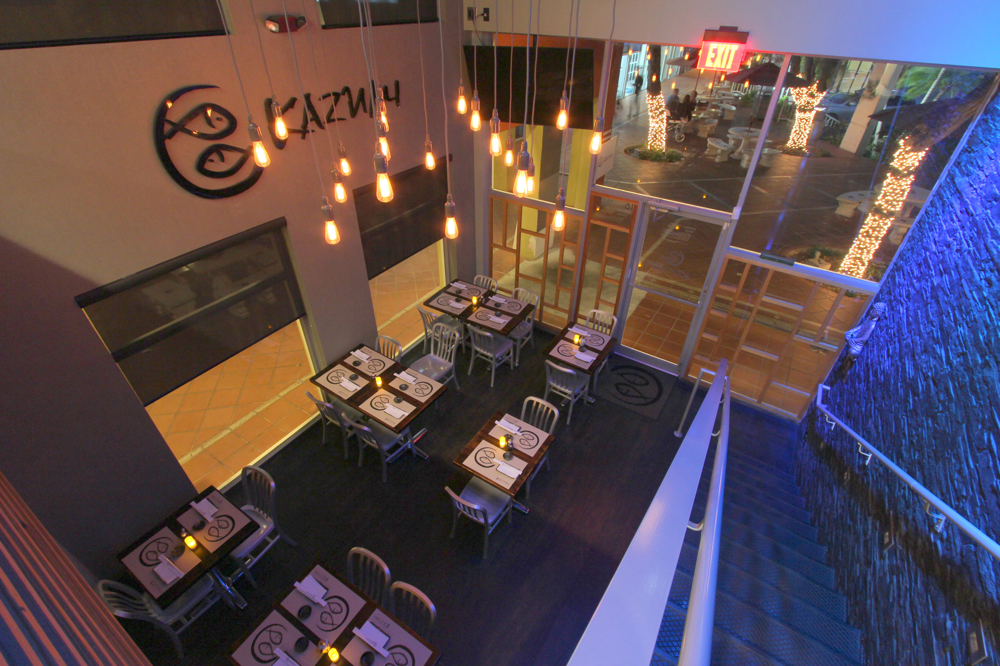
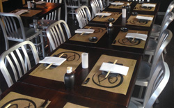
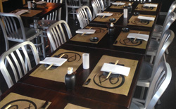
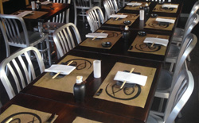

 

A new way of eating
kazumi extraordinary cuisine at an ubelievable place
Experience Japanese cuisine at its best at this contemporary and chic restaurant in Key Biscayne, FL. It’s bright and earthy colour interiors with modern decor greatly complements its new range of creative menus created by the Chef, a pioneer in Japanese cuisine. Experience a whole new level of F&B experience at Kazumi – your favorite Japanese restaurant at Key Biscayne, Miami’s Paradise.
